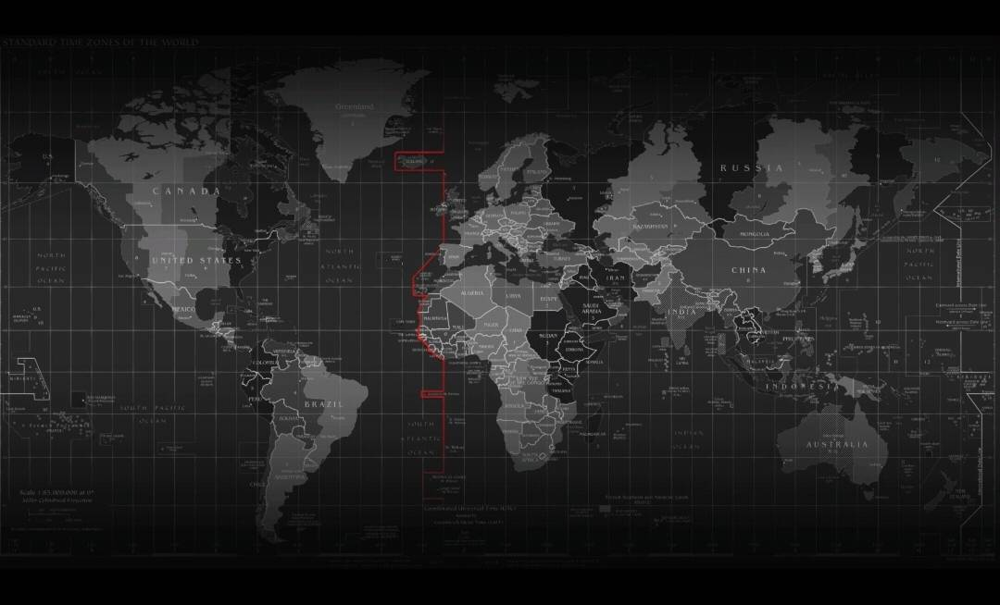

|  | GIS（地理信息系统）是一种用于捕捉、存储、管理、分析和展示地理数据的技术和工具。它结合了地理学、地图学和计算机科学，可以帮助我们理解和解释地球上的空间关系。 GIS使用计算机硬件和软件来处理和分析地理数据。它可以接收来自各种来源的地理数据，包括卫星图像、航空照片、传感器和地面调查。通过对这些数据进行处理、整合和分析，GIS可以生成地图、图表和报告，以帮助决策者做出更明智的决策。GIS在各个领域都有广泛的应用，包括城市规划、环境管理、交通规划、应急响应、农业、地质勘探等。它可以帮助我们了解地理现象之间的关系，发现模式和趋势，以及预测未来的变化。 |

地学（地球科学）是研究地球的物理、化学和生物过程的学科。它包括地质学、地球物理学、气象学、海洋学、环境科学等子学科。地学的研究范围涵盖了地球的内部结构、地壳演化、地震活动、气候变化、生物多样性等方面。 GIS在地学中的应用非常广泛。它可以帮助地学家收集和分析地球上的各种数据，包括地质构造、地貌特征、气候模式、海洋循环等。通过将地学数据与地理空间信息相结合，GIS可以提供更全面、准确的地球科学研究结果，并支持环境保护、资源管理和灾害预防等领域的决策制定。